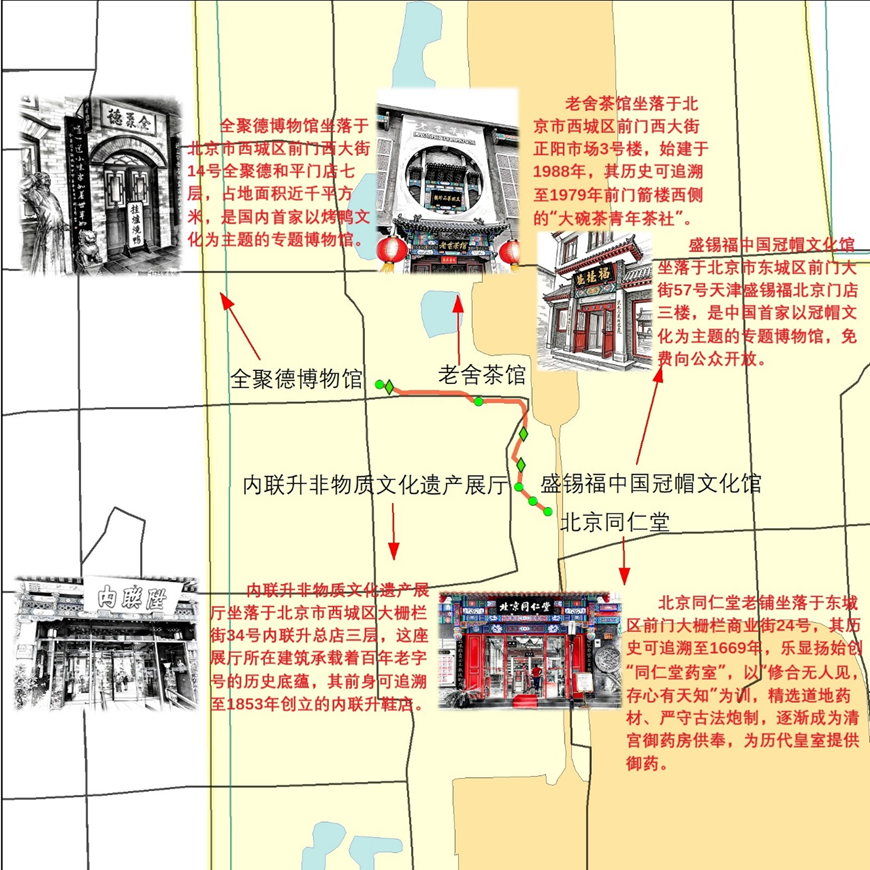

京味文化中轴非遗体验游
探索北京中轴线沿线的老字号和非遗文化，感受北京的传统魅力，体验老北京的市井风情。
这条路线将带您领略京味文化的独特魅力，了解非遗传承的重要性。
全聚德博物馆（和平门） — 老舍茶馆（前门店） — 内联升非物质文化遗产展厅（大栅栏） — 北京同仁堂（大栅栏） — 盛锡福中国冠帽文化馆（前门大街）

展示全聚德烤鸭文化的专题博物馆
传承老北京茶文化的代表性茶馆
展示传统制鞋工艺的非遗展厅
中华老字号中医药文化传承地
展示中国冠帽文化的专题博物馆